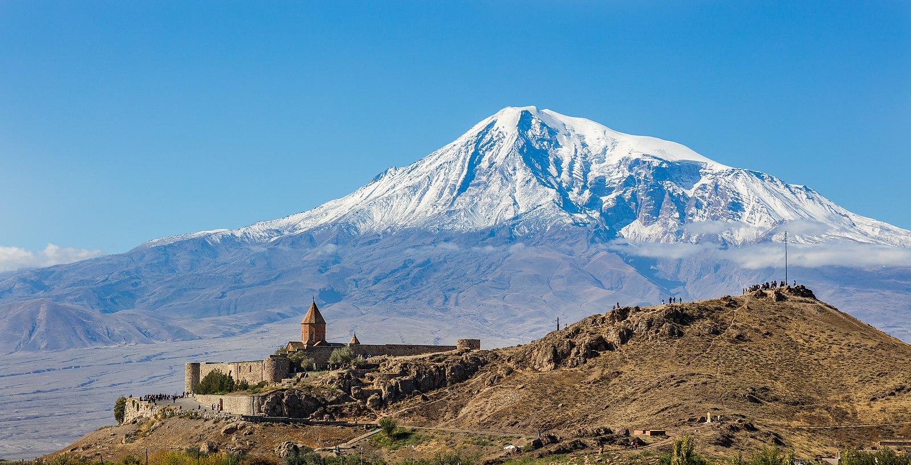

Reload the page
Galleri med bilder
Meny med externa länkar
Evenemang
Lite om mig själv
Om Yerevam
Media files, Videos, bilder, audio
Landscape and Monasteries in Armenia

Khor Virap Monastery
Tatev Monastery
Yerevan
Republic Square
 Tatev Monastery
Tatev Monastery